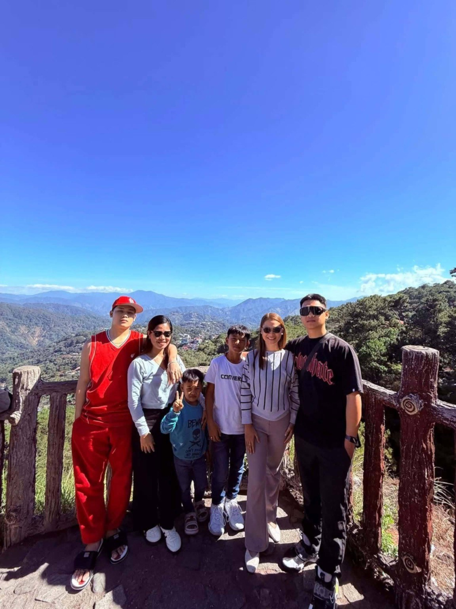
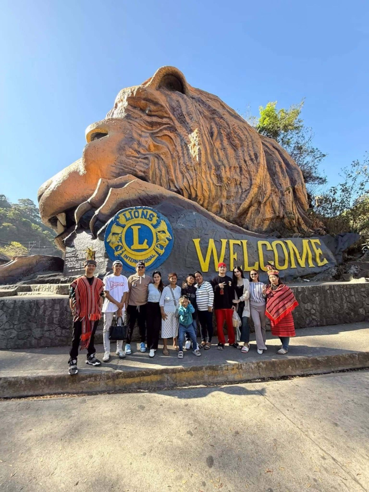

About Me
Getting to know the student behind this Web Design Portfolio.

I’m Irish Nicole Palomo.
I am a Bachelor of Science in Office Administration student from BSOA 4B. I created this portfolio as part of my Web Design subject to gather and present the lessons, activities, and reflections from my learning journey.
Through this subject, I am exploring how websites are planned, structured, designed, and organized for visitors. The experience connects creativity with practical skills such as arranging information, choosing visual elements, building clear navigation, and making content easier to access.
This portfolio is a place to document what I have studied and practiced, recognize the guidance I have received, and show how my understanding of web design continues to grow.
- Name: Irish Nicole Palomo
- Program: Bachelor of Science in Office Administration
- Year and section: BSOA 4B
- Subject: Web Design · ELEC 4106
Learning with intention.
This portfolio reflects an interest in combining office administration knowledge with digital tools and creative communication.
Family moments I treasure.
These photographs capture time spent together and the memories that make each journey meaningful.

